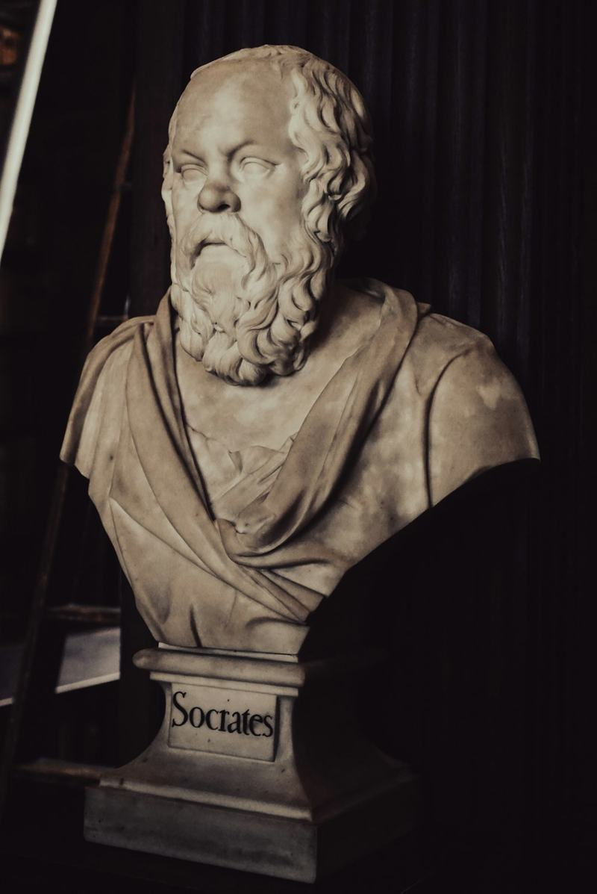
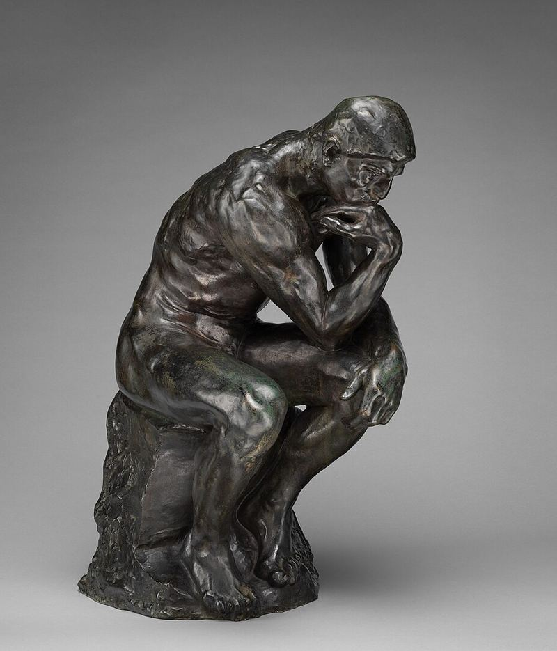
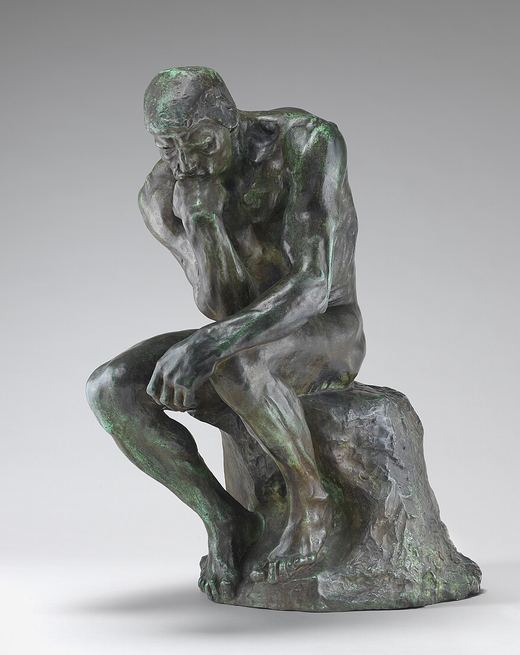

Name
Reality Check
Plato's prisoners took shadows for reality. A reality check is the walk out.
Reality Check · round 6 · version 2
Every session walks out of Plato's cave: it starts in the dark with what you feel sure of and ends in daylight with what you could prove. This version follows Apple's design principles and the research on reading comfort, navigation and learning.
The screens

Feeling sure isn't knowing. Map an idea, answer real questions, and see how close your guess was.

Your tutor works the same way. It's an AI that asks questions and never hands you the answer.
You'll build the map of democracy in 4 parts, 2 points each.
How many of the 8 points do you think you'll get?
You'll see how close you were at the end.

Up Next
Recent
DemocracyScored 5 of 8 · guessed 7Up Next
Recent
DemocracyScored 5 of 8 · guessed 7 Plaster
Plaster
Bronze
PatinaA part moves up a stage each time you finish it with at most one retry or hint.
At Bronze, a wrong answer no longer gets a free nudge. Hints are still there, for a point.
A law?
Not quite: a law is one rule, and democracy isn't a rule. So what kind of thing is it?
Think of monarchy and dictatorship. What are all three examples of?
This part can now score 1 point at most.
A law?
Not quite: a law is one rule, and democracy isn't a rule. So what kind of thing is it?
Think of monarchy and dictatorship. What are all three examples of?
Forms of government.
A law?
Not quite: a law is one rule, and democracy isn't a rule. So what kind of thing is it?
Think of monarchy and dictatorship. What are all three examples of?
Forms of government.
Couldn't reach your tutor. Your answer is saved.
You felt 2 points surer than you were.
You found the bigger group and a real exclusion. 'What it needs' is next.
If gas goes up, is that inflation?
Not by itself: that's one product. It counts as inflation when the overall price level goes up.
A law?
Not quite: a law is one rule, and democracy isn't a rule. So what kind of thing is it?
Research
| Principle | What changed | Source |
|---|---|---|
| Agency: a guided flow should be easy to leave | Every session screen has Close, and closing saves your answers. | Apple HIG |
| Responsibility: be clear about what the product does | The welcome says the tutor is an AI that never hands over the answer. | Apple HIG |
| Liquid Glass: controls float above content; brand color stays in content | Close, Skip, Done and the answer box are glass. Bronze marks only the main action. | Apple HIG |
| Typography: 17 pt text, no light weights, a brand face for headlines and the system face for controls | Newsreader for titles, questions and the conversation, at 17 pt with roomy lines. Buttons, labels and lists use the phone's own font. | Apple HIG |
| Harmony: capsules and nested corners | Capsule buttons, and every inner corner is the outer corner minus the padding. | WWDC25 |
| Contrast: aim for 7:1 for small text | Secondary text darkened to 7.6:1. Hints moved from bright gold to a soft container. | Apple HIG |
| Dark mode: dark grey, never black; muted accents | Dark mode uses warm umber grey and a muted gold for hints. | Material |
| Response times: anything over a second needs a moving indicator and a reason | "Checking your answer…" with moving dots while the tutor replies, and Send waits. | NN/g |
| Errors: say what happened where it happened, keep the input, offer a fix | A failed reply shows under your answer, keeps it, and offers Try Again. No red: terracotta only means the gap. | NN/g |
| Navigation: tab bars are for 3 to 5 peer sections | A home screen instead of a tab bar, with Progress one tap away and settings in the corner. | Material |
| Goal-gradient, Zeigarnik: visible progress and unfinished work pull people back | The Greek key shows the parts all session, and Home leads with Resume. | Laws of UX |
| Progressive disclosure: one main thing per screen | At level 5 the map fills the screen and the fact desk is a half-height sheet. | NN/g |
| Help with a visible price: learners try first, see the cost, and choose | The cost is on the Help button, and hints never open on their own. | Koedinger & Aleven |
| Competence: levels need clear criteria | Progress says what moves a part up a stage. | Deci et al. |
| Peak-end: the ending shapes the memory | The result casts each point into bronze one by one, then gives one next step. | Laws of UX |
| Onboarding: teach by doing | One skippable welcome. Hints and level 5 explain themselves when they first appear. | Apple HIG |
For #14
Reality Check
Plato's prisoners took shadows for reality. A reality check is the walk out.
A question mark standing in the cave mouth. Its dot is a bronze check.
Newsreader by Production Type, made for long reading on screens, from @expo-google-fonts/newsreader. The system font is SF Pro on iPhone and Roboto on Android, so it costs nothing to load.
One meaning per color
| Color or shape | It means | Where |
|---|---|---|
| The cave | What you haven't checked yet | Splash, welcome, the guess |
| Daylight | Where you work it out | Home, every question, the result |
| A shadow | A point you feel sure of but haven't proven | The guess, the result |
| Bronze | A point you proved, and the main button | The result, buttons, the map's center |
| Lamp and the sun | Hints and Help, which cost a point | Hint cards and buttons |
| Terracotta | The overconfidence gap, and nothing else | The result |
| Patina and the laurel | Done with no help, and level 5 | Result, progress, level 5 |
| Glass | A control floating above the content | Close, Skip, Done, the answer box |
| The arch | The way out of the cave. Every photo sits in one. | Splash, welcome, the guess, home, progress, the icon |
| Italic | A question being asked | Every question the tutor asks |
| The Greek key | How much of the map is built | The top of every question, home |
Five stages, five levels
WCAG 2 ratios for every color pair the screens use, computed in this page. Text needs 4.5:1 and graphics 3:1; secondary text aims for Apple's 7:1.
| Pair | Ratio | Needs |
|---|